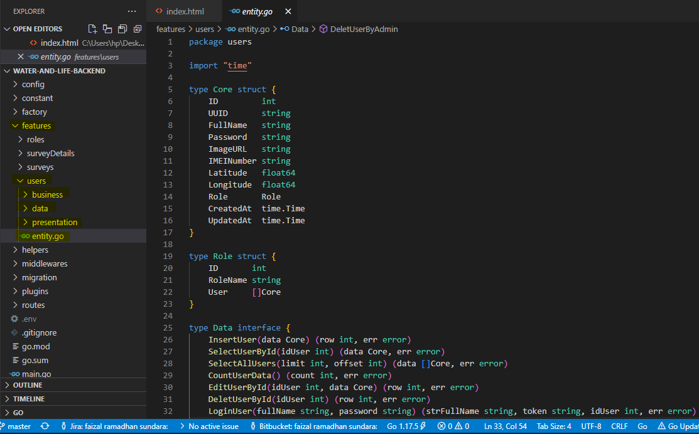
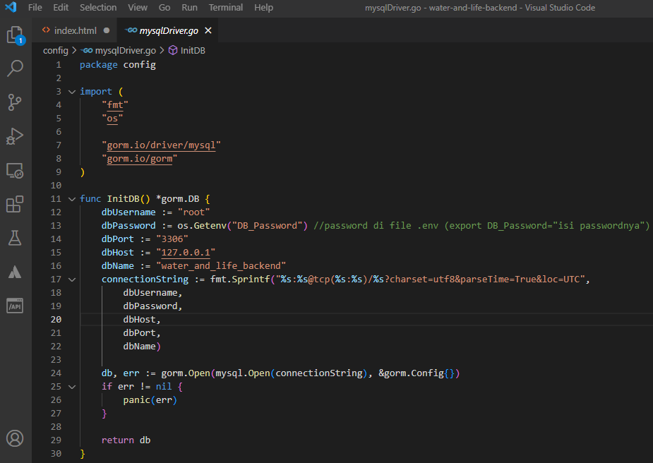
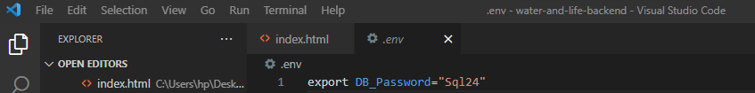
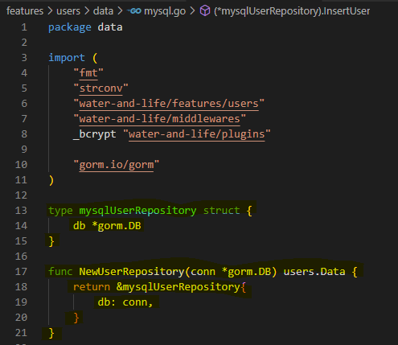
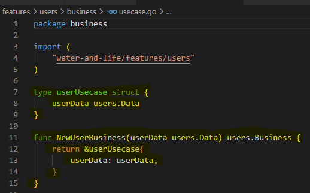
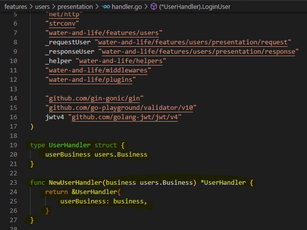

Dokumentasi Pembuatan Aplikasi Water & Life
Aplikasi Water & Life
Water & Life adalah aplikasi yang berisi layanan monitoring kuesioner berupa survey, maintenance, dan pemasangan komponen yang berhubungan dengan alat water purifier.
Terdapat beberapa fitur seperti user yang terdiri dari beberapa role management, pembuatan dan pengisian form survey, pembuatan form maintenance, dan form pemasangan komponen alat purifier. Terdapat beberapa fitur yang berhubungan dengan third party api,
terutama google map api(places) dan survey harus berisi gambar/foto sebagai bukti survey.
Bahasa dan Arsitektur/Struktur
Bahasa yang digunakan dari sisi server/backend yaitu bahasa Golang. Dengan struktur clean architecture yaitu terdapat direktori yang berbeda sesuai
dengan tujuan dan fungsi servicenya.

Dalam features (di gambar atas di highlighter kuning) terdapat beberapa direktori fitur yang di dalamnya terdapat business, data, presentation, dan file entity.go, entity.go merupakan core yang terdapat fields yang dibutuhkan sebagai inti kontrak, juga pada entity.go terdapat kontrak-kontrak yang harus diikuti/diimplementasi
oleh layer/direktori data dan presentation. Oleh karenanya, pada layer/direktori data terdapat query untuk implementasi kontrak yang telah ada di file entity.go begitu pula dengan layer/direktori business.
Di sini terdapat beberapa penjelasan yaitu koneksi ke database, migration, dan pembuatan salah satu fitur.
- Koneksi ke database
Script koneksi database :

Untuk koneksi ke database bisa disimpan di .env file bisa disimpan mulai dari username sampai nama database, atau hanya passwordnya saja seperti proses pengerjaan ini.
Script .env file :

- Pembuatan fitur
Penjelasan pembuatan fitur:
1. Implementasi fields dan kontrak berupa method di file entity.go
Pada method file entity.go terdapat Core dengan tipe data struct yang berisi fields dengan tipe datanya masing2. Dan di entity.go terdapat tipe data interface untuk data dan business yang berisi function(method) sebagai kontrak yang harus diimplementasikan di file mysql.go di folder/layer data dan di file usecase.go di folder/layer business pada setiap features.
2. Implementasi di folder/layer data pada setiap features
Pada folder data terdapat model.go dan mysql.go, implementasikan terlebih dahulu model.go sebagai susunan fields sesuai dengan Core pada file entity.go, sedangkan pada mysql.go berupa function/method yang berisi query yang relation untuk CRUD ke database. Pada mysql.go juga harus implementasi terlebih dahulu struct yang berisi tipe data pointer gorm sebagai koneksi ke database dan fungsinya (seperti gambar di bawah{yg highlighter kuning}).

Pada model.go terdapat function toCore, toCoreList, dan fromCore semua itu dipakai di mysql.go saat query ke database ---> toCore untuk menampilkan(GET) satu data dari database, ---> toCoreList untuk menampilkan(GET) lebih dari satu data/kumpulan data (map), --->fromCore untuk mengisi data(POST).
3. Implementasi di folder/layer business pada setiap features
Pada setiap folder business di masing2 features terdapat file usecase.go yang berisi method/fungsi yang telah direncanakan sesuai di file entitiy.go pada interface business. Pada usecase.go juga harus implementasi terlebih dahulu struct yang berisi tipe data hasil return dari mysql.go (pada layer data), karena usecase.go (pada business layer) punya relation ke file mysql.go (pada layer data) dan fungsinya (seperti gambar di bawah {yg highlighter kuning}).

4. Implementasi di folder/layer presentation
Pada folder/layer presentation terdapat file handler.go yang berisi function yang nantinya dipakai di routes.go (pada folder routes). Di handler.go merupakan UI yang merupakan gerbang/pintu untuk menerima data dari user ke backend melalui frontend dan menampilkan/mengirimkan data yang telah diolah oleh backend ke frontend. Pada handler.go juga harus implementasi terlebih dahulu struct yang berisi tipe data hasil return dari usecase.go (pada layer business), karena handler.go (pada layer presentation) punya relation ke file usecase.go (pada layer business) dan fungsinya (seperti gambar di bawah {yg highlighter kuning}).

Pada layer/folder presentation terdapat folder request dan response, semua itu dipakai di handler.go. request dipakai ketika input data dibutuhkan request untuk strukturnya dan response dipakai ketika menampilkan hasil data untuk strukturnya di handler.go
5. Pembuatan factory.go pada folder/layer factory
Untuk setiap fitur yang kita buat dan telah diimplementasikan fungsinya pada layer data, business, maupun presentation, perlu dibuat atau diimplementasikan alur pembuatan objeknya di factory.go di mana dapat dilihat terdapat alur bahwa layer data parameternya dari database(gorm), layer business parameternya dari return data, dan layer presentation/handler diisi parameternya dari return business.
6. Pembuatan plugins
Plugins sendiri berisi fungsi2 atau library pihak ketiga seperti hashing untuk password, atau kedepannya bisa dipakai untuk fungsi third party api.
6. Pembuatan migration(migrate.go)
Pada migration dipergunakan agar model.go (struct) pada folder/layer data di setiap features, yang telah kita definisikan bisa diimplementasikan di database sehingga terbuat tabel dengan fields atau kolom-kolomnya sesuai dengan struct di model.go pada layer data di tiap fitur.